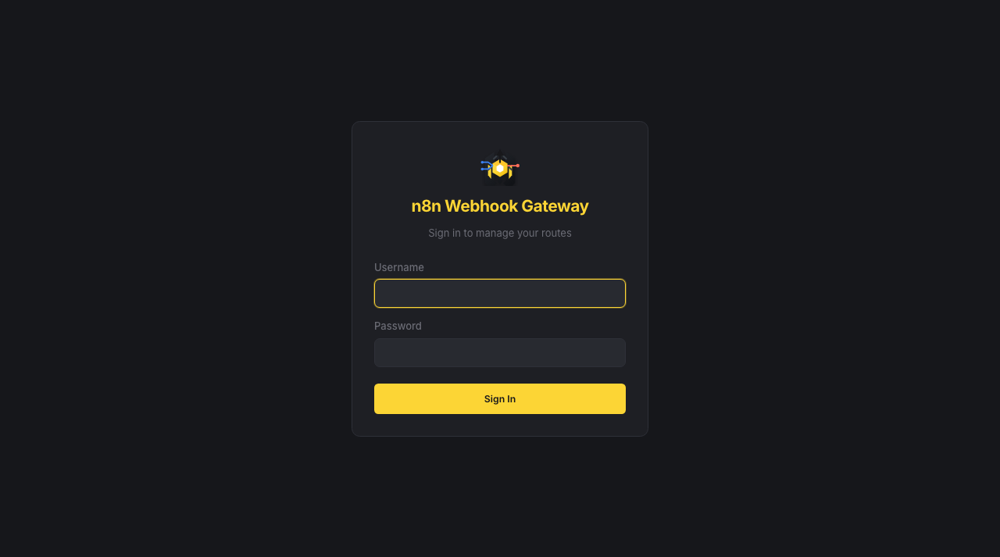
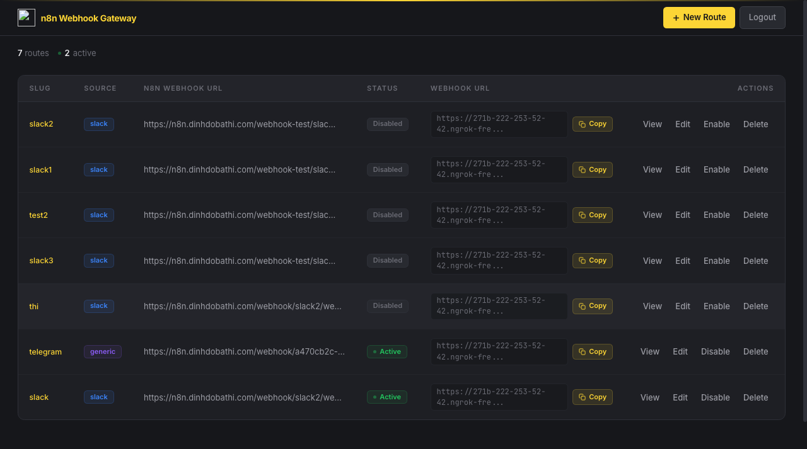
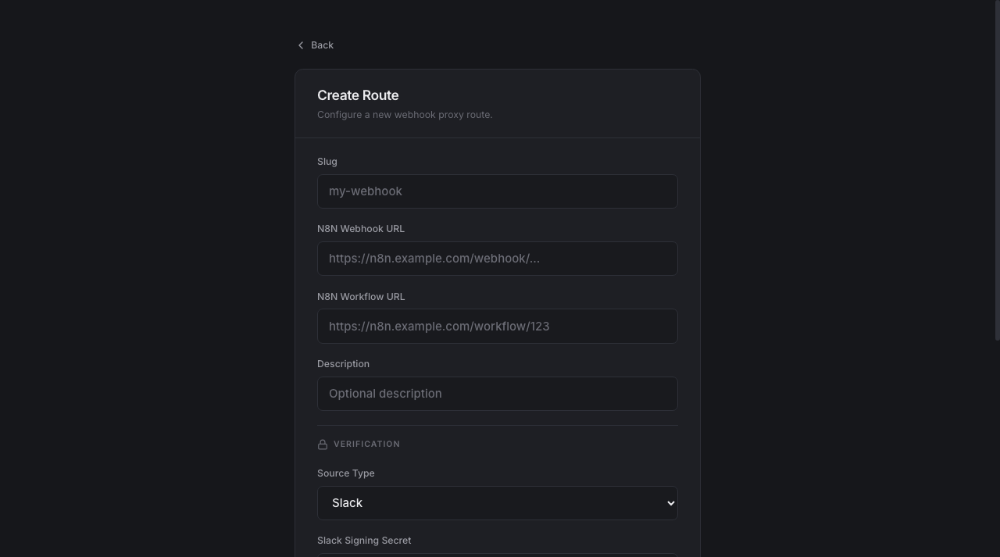
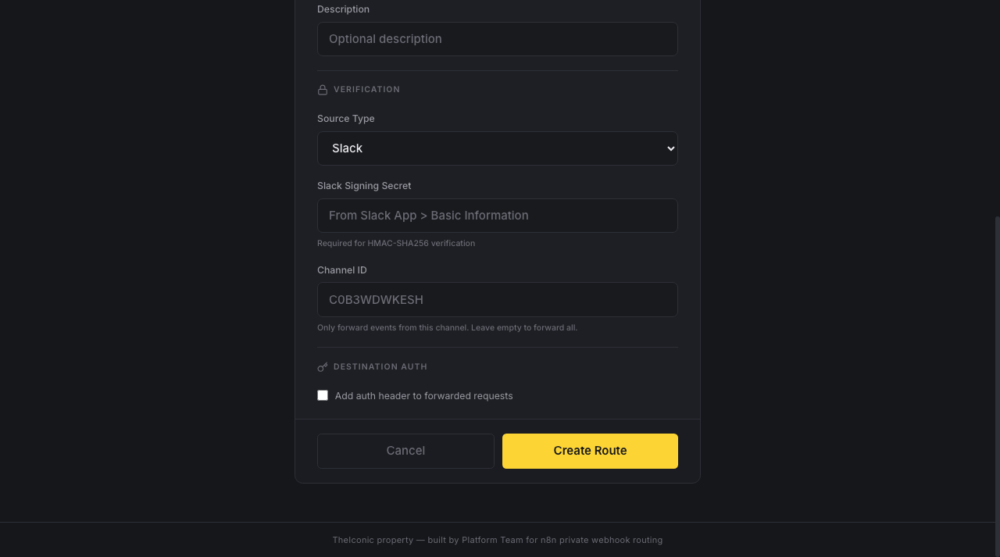
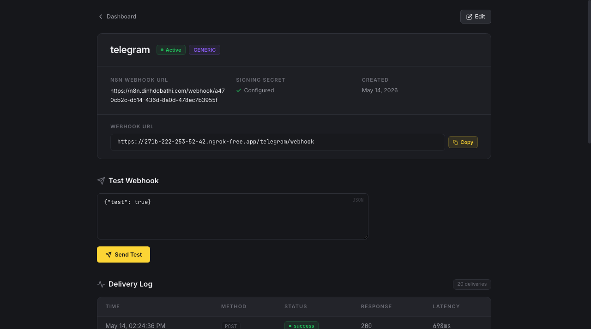
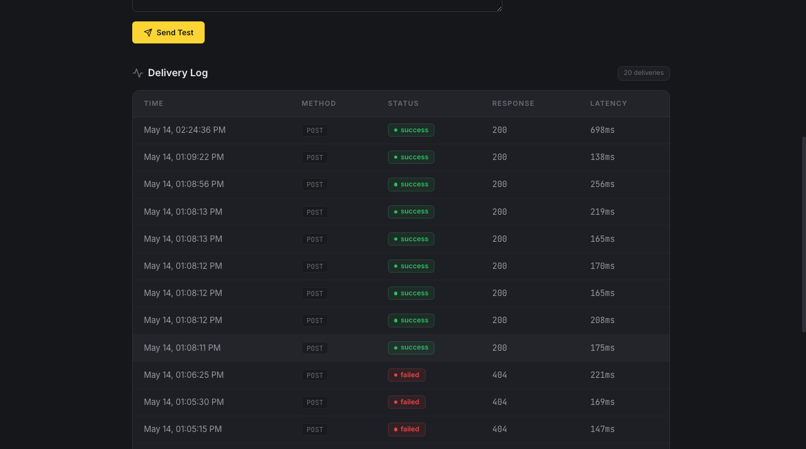
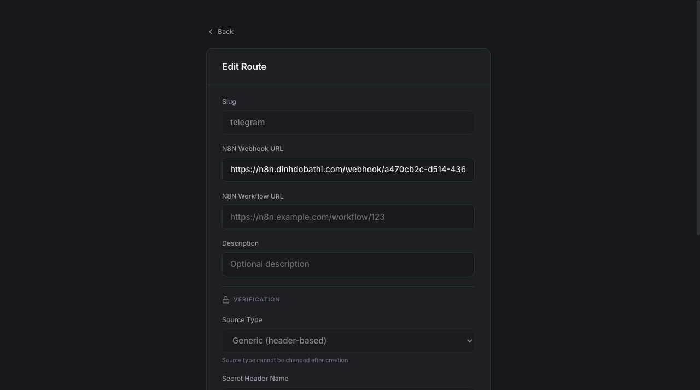
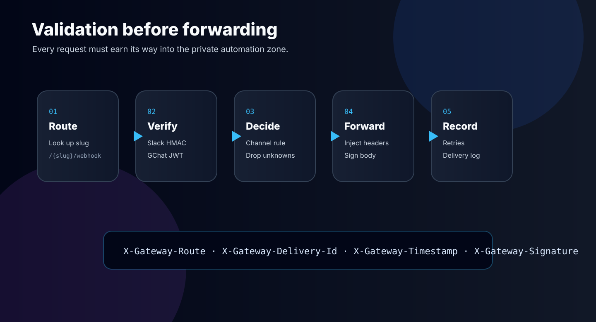
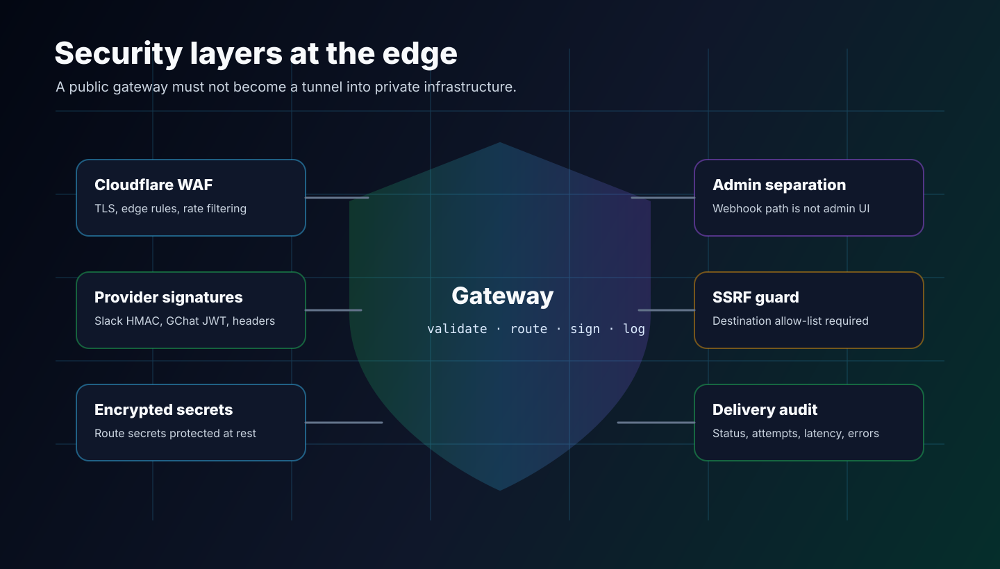

The problem
I installed n8n inside an organization environment. It is useful because it can connect to internal databases, internal systems, and private services. That is also exactly why it should not be exposed directly to the internet.
The security model was clear: egress is normal, ingress is restricted. n8n can call third-party systems, but third-party systems cannot call n8n. No public n8n API, no public webhook trigger, no public application trigger.
That worked until more workflows needed to start from Slack chat, Slack calls, Google Chat, or other external events. These tools are designed to send a request to a public URL. My n8n instance was intentionally private.
The real requirement: expose a small, controlled webhook surface, not the whole n8n system.
The first idea is always easy: put a public proxy in front of n8n and forward /webhook/*. Technically, that works. But it moves the risk instead of solving it.
A webhook endpoint still needs to answer hard questions before forwarding anything:
- Is this request really from Slack, Google Chat, Telegram, GitHub, or someone replaying a curl command?
- Which internal n8n workflow should receive it?
- Should this Slack channel trigger this workflow, or should it be dropped?
- How do I know whether forwarding succeeded?
- Can an attacker use this public endpoint to reach private IPs or cloud metadata endpoints?
- Where should admin UI access live if the public URL must be webhook-only?
At that point the component is no longer a proxy. It is a gate.
The gateway design
I built n8n-webhook-gateway as a small FastAPI application. It exposes stable public webhook URLs, validates inbound requests, routes them to the correct internal n8n destination, and records each delivery attempt.
The public URL is something like:
https://gateway.example.com/platform-alerts/webhook
The destination can stay private:
https://n8n.internal.example/webhook/real-workflow-id
External systems only know the gateway URL. n8n remains internal.
Product screenshots
The gateway also has a small admin UI. It is intentionally operational: route table first, quick copy buttons, clear status badges, and enough detail to debug delivery without opening the database.







Routing model
Each route has a stable slug. The gateway stores the real destination URL behind it. If the n8n workflow changes later, I update the route in the gateway instead of changing every Slack app or third-party integration.
| Field | Purpose |
|---|---|
slug |
Stable public path, for example platform-alerts |
destination_url |
Internal n8n webhook URL |
source_type |
slack, gchat, or generic |
signing_secret |
Used to validate source request or sign gateway-to-n8n payload |
auth_header |
Optional auth header injected when forwarding to n8n |
The inbound endpoint is intentionally simple:
ANY /{slug}/webhook
The management API and UI are not part of that public contract. They live under an admin path and can be restricted internally.
Request validation

This is the part that makes it a gateway instead of a forwarder.
For Slack, the gateway validates X-Slack-Signature and X-Slack-Request-Timestamp with the route's Slack signing secret. It also handles Slack URL verification challenges, so the Slack app can be registered against the gateway URL.
For Google Chat, it verifies the bearer JWT using Google's public certificates and the expected audience.
For generic providers, it can validate a configured secret header. That works well for providers such as Telegram or internal partner systems where a shared secret header is enough.
Only after validation does the gateway forward the request to n8n.
Channel-based routing
One useful feature came from the Slack use case. A single Slack app can receive events from multiple channels, but not every channel should trigger the same workflow.
Slack route: platform-bot channel C0123... -> n8n workflow A channel C0456... -> n8n workflow B unknown channel -> dropped
This keeps Slack automation manageable without creating a new public endpoint for every workflow.
Forwarding with audit trail
Every forwarded request gets gateway headers:
X-Gateway-Route- route slugX-Gateway-Delivery-Id- generated delivery UUIDX-Gateway-Timestamp- unix timestampX-Gateway-Signature- HMAC of the forwarded body when a signing secret is configured
The gateway retries on 5xx responses and timeouts with exponential backoff. It also logs delivery status, response code, attempt count, latency, response excerpt, and error message.
When Slack says it sent an event but n8n did not behave as expected, I can check the delivery log and see whether the problem was validation, routing, n8n response, timeout, or a downstream workflow issue.
Security controls

Because the gateway is public, it needs boring but important protections:
- Secrets are encrypted at rest with a dedicated encryption key.
- JWT signing key and field encryption key are separated.
- Startup fails if production secrets are weak defaults.
- Inbound webhook rate limits are applied per route and client.
- Request body size is capped.
- Private destination IPs are blocked by default to reduce SSRF risk.
- Allowed internal destinations must be explicitly configured.
- Session cookies are httpOnly and can be forced Secure behind HTTPS.
- The container runs as non-root with Linux capabilities dropped.
The SSRF protection is especially important. A gateway that can reach internal services must not become a public tunnel to every internal IP. The default behavior blocks private and link-local addresses. For the real n8n destination, I allow only the expected internal hostnames.
Cloudflare and admin separation
I put the gateway behind Cloudflare WAF. Cloudflare handles the edge layer: DNS, TLS, WAF rules, and public traffic filtering. The application still validates the request itself, because WAF rules should not be the only security boundary for signed webhooks.
The public surface is only:
/{slug}/webhook
/health
The admin UI and route management API live under an internal admin path. In production, that can be restricted by Cloudflare WAF, ingress rules, VPN, or an internal-only hostname.
Tradeoffs
I kept the first production version intentionally small. SQLite is enough for a single-replica gateway and a small number of routes. It also keeps deployment simple because there is no external database dependency.
The tradeoff is scaling. SQLite and in-memory rate limiting are not ideal for multiple replicas. If traffic grows, the next step is PostgreSQL for route and delivery storage, Redis for shared rate limiting, and a queue for async delivery.
| Layer | Technology |
|---|---|
| Backend | Python 3.12, FastAPI, httpx |
| Data | SQLAlchemy async, SQLite |
| Auth | bcrypt, JWT cookie auth |
| Frontend | React, Vite, TypeScript |
| Deployment | Docker, Kubernetes, Cloudflare WAF |
For now, the gateway solves the main problem with minimal moving parts: public events can trigger internal n8n workflows without exposing n8n itself.
What I learned
Private automation does not mean it cannot integrate with public SaaS tools. It means the boundary needs to be designed deliberately.
Do not make n8n public. Make a small, auditable, provider-aware gateway public.
That gave me a clean split. n8n stays powerful and private. The gateway becomes the controlled edge: validate, route, sign, log, and only then forward.
Next improvements
- Add retention cleanup for delivery logs.
- Add Prometheus metrics for request count, latency, retry count, and failure rate.
- Add replay for failed deliveries.
- Move to PostgreSQL if I need multiple replicas.
- Add more first-class provider verifiers such as GitHub HMAC.
But the core story is already useful: when ingress to automation is not allowed, do not punch a large hole. Build a narrow gate and make that gate responsible for trust.